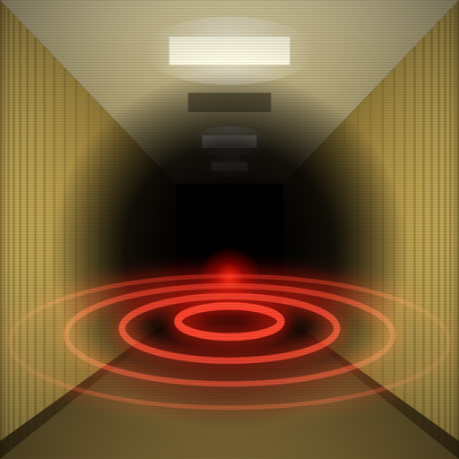

you shouldn't be here.
Hollow Halls is a top-down stealth horror game. You wake up in endless, empty halls with a weak flashlight. Somewhere in the dark is a door marked EXIT — and something is walking toward you.
It has no eyes. It hears you when you run, and it feels light pointed at it.
There is no music and nothing on screen to warn you. You only hear what you would really hear.
Touch anywhere on the lower half of the screen and drag. A small push sneaks in silence. Push further to run — the harder you run, the louder your steps, and the farther they carry.
Hold HIDE to switch your light off and stay perfectly still, for as long as you dare.
Your flashlight starts dim. Tap it to switch between DIM, MID and HIGH. A brighter light shows more of the halls, and makes you easier to notice.
Old radios lie around the halls. Pick one up and for a few seconds a needle points toward the nearest one. The static grows when you face it.
Once per level, Sonar points the way to the exit for a few seconds.
Level 0 — The Lobby. Yellow wallpaper, damp carpet, wet footsteps.
Level 1 — The Storeroom. Bare concrete, and something being dragged. More than one of them.
Level 2 — The Pipeworks. Narrow pipes, metal gratings and bursts of steam that hide you.
Endless. It keeps going down.
Each maze is generated fresh every time you play. Escape a level to unlock the next one in Level Select.
It's best with them. Its footsteps come from the direction it is in, so you can tell where it is.
Yes, with the SOUND and VIBRATION buttons on the title screen. Sound also follows your iPhone's silent switch.
One purchase removes the full-screen ads between levels, lets you use Revive and Sonar without watching an ad, and unlocks Camcorder Mode, a warm home-video look with a date stamp.
Tap RESTORE on the title screen, signed in with the same Apple Account you used to buy it.
It's quiet and tense rather than gory. There is no blood, but there are sudden scares when you're caught.
Last updated November 14, 2026
Hollow Halls does not ask for an account and does not collect personal information such as your name, email address, contacts, photos or location.
The free version shows ads through Unity Ads (Unity Technologies). Ads are requested as non-personalized, and the app never asks for permission to track you across other apps. To show and measure ads, prevent fraud and limit how often you see the same ad, Unity may receive technical information such as your device model, operating system, IP address, and how you interact with ads. See Unity's privacy policy for details.
If you buy Remove Ads + Perks, full-screen ads are no longer shown.
Purchases are handled by Apple. The app only receives confirmation that the purchase was made; it never sees your payment details.
Your unlocked levels and settings (sound, vibration, Camcorder Mode) are saved only on your iPhone and are removed when you delete the app.
Hollow Halls is not directed at children under 13.
If this policy changes, the update will be posted on this page.
Found a bug, or got stuck somewhere strange? Get in touch.
EMAIL SUPPORT